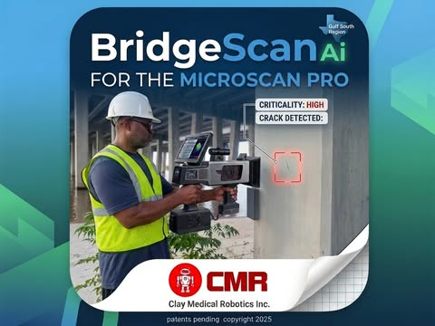
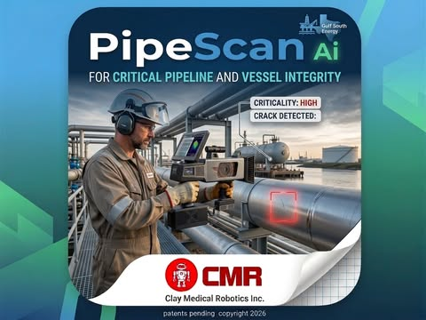

Clay Medical Robotics — field instrument
One handheld device, four AI-powered inspection modules — MicroScan Pro Ai Assist classifies surface fractures as critical or non-critical across bridges, pipelines, hulls, and structural foundations, in real time. No cloud connection, no coupling gel, no equipment shutdown required.
Each module is a domain-trained specialist inside Court of Owls, built for a different surface and failure mode.

Saltwater-exposed bridge structures — piers, columns, and load-bearing concrete along the Gulf Coast.
Fiberglass hull inspection — gelcoat stress cracking, delamination, and impact fracture detection.

Critical pipeline and vessel integrity — corrosion, weld seam cracking, and mill-scale surfaces.

Concrete foundation and structural members — parking garages, hotel structures, load-bearing analysis.
A real inspection story from an Airbus Americas engineer set the direction for everything that followed.
A typical inspection with existing surface-mapping tools returns fifteen to forty simultaneous alerts on a single panel scan — every scratch, dent, and shadow flagged with equal visual weight.
Existing instruments are geometry systems. They measure how deep a feature is. They don't answer the question that actually matters in the field: is this one a critical structural failure, or noise?
That gap — inspectors call it heat map confusion — is what MicroScan Pro was built to close. Silent unless it's critical.

A weighted ensemble of domain-trained classifiers, arbitrating together on every frame.
The handheld unit seals against the surface, strobes controlled illumination, and captures the surface geometry — no cloud round-trip, no gel coupling, nothing else on site has to stop.
A weighted ensemble of YOLOv8-based classifiers — the Court of Owls — votes on every frame. Each "owl" is trained on a different surface domain, and the panel arbitrates together rather than trusting one model alone.
Across a five-level Owl Scale, from OWL-1 Silent to OWL-5 Screech, the device stays quiet until a genuinely critical defect appears — then issues one high-confidence alert, on-device, in real time.
Gulf Coast bridge piers, storage tanks, and scrap steel — the calibration tour, as it actually happened.


Lab-validated on synthetic training data calibrated to MicroScan Pro's own shroud optics. Zero false alarms recorded across Biloxi field surfaces during the June calibration tour. Field-to-real transfer validation is ongoing — see full methodology in the technical report.
When Court of Owls flags a defect, the field unit shows exactly what an inspector needs and nothing else — no wading through a wall of bounding boxes.

MicroScan Pro is developed by Clay Medical Robotics Inc., founded by Charlie Clay III out of Biloxi, Mississippi. Before Clay Medical Robotics, Charlie spent over three decades in electronics engineering, including years as an Electronics Engineering Specialist with the U.S. Department of Energy at Lawrence Livermore and Lawrence Berkeley National Laboratories.
That background — precision instrumentation, national-lab rigor, and a habit of building the tool you wish existed — is the throughline from the first hand-drawn shroud sketch to a unit that's now been carried out onto real Gulf Coast bridge piers and steel structures.
Charlie Clay III — Founder & CEO, Clay Medical Robotics Inc.
MicroScan Pro Ai Assist is field-validated and under active development. If you inspect bridges, pipelines, tanks, or structural steel and want to follow along or talk about early access, reach out directly.
Contact Charlie Clay III